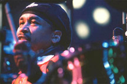

|
|
Carter Beauford started on his music career at an early age of three years old. That's when his father, who couldn't find a baby sitter, took the toddler drummer-to-be to see the legendary Buddy Rich, which Beauford says "put the icing on the cake for me as far as what I wanted to do and what route to take. Believe it or not, I knew it was what I want to do then," Beauford says. "My dad was a jazz trumpet player and kinda hipped me to the whole music scene. And he made it look like so much fun I decided to go ahead and pursue it." Charlottesville, VA native Beauford largely lived behind his kit as a youth. "As long as I was on the drums, I was fine," he says. Beauford played his first professional gig at age nine with a jazz-fusion outfit led by local luminary Big Nick Nicholas (an associate of John Coltrane's). Eventually, he wound up in a Richmond, VA based group called Secrets, which a young Dave Matthews used to watch before approaching Beauford and the group's saxophonist, LeRoi Moore, to help him work on some material he was developing. "I took a listen to it, and it was kind of interesting, the way he played and the way he wrote music" Beauford says. "Before long we were in the studio recording, not our first record, but something that we could go back and listen to and play for friends and see what people thought. We played it to friends and people were whooping and hollering over that sound we generated." Obviously, it was successful. Beauford's work with the Dave Matthews Band has generated a demand for his playing on others' records as well. Since the release of "Before These Crowded Streets," Beauford has shown up on albums by Carlos Santana, Blues Traveler's John Popper, Victor Wooten of Bela Fleck's Flecktones and Robin Andre (AKA Boy Wonder). "Outside work keeps the creativity flowing for me," Beauford says. "I feel it's important to get in there and try to tackle someone else's music and play a little differently, and then bring it back to the band."